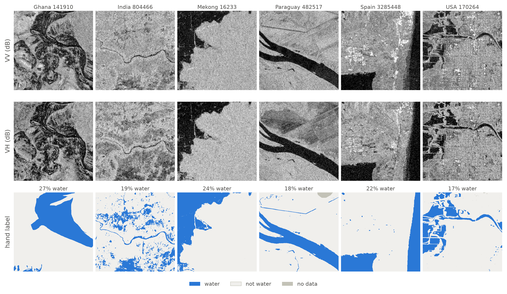
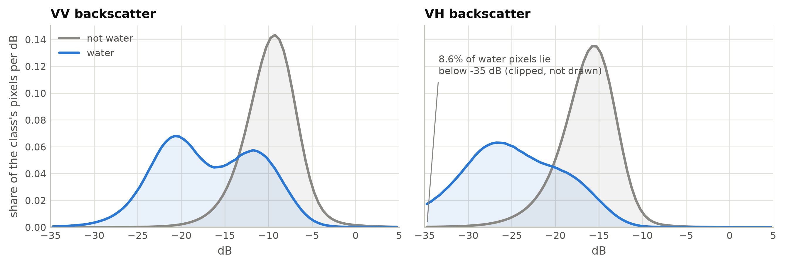
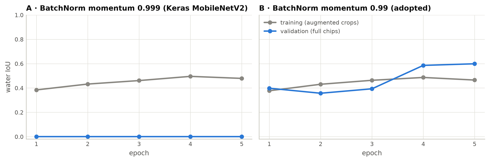
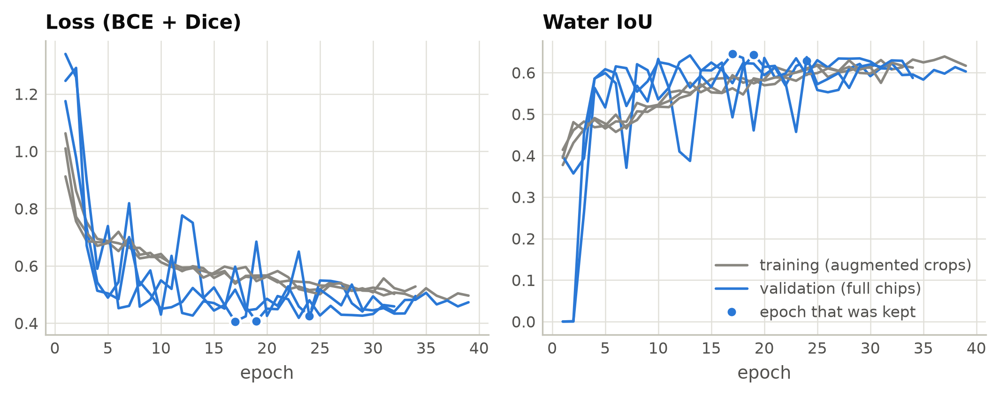
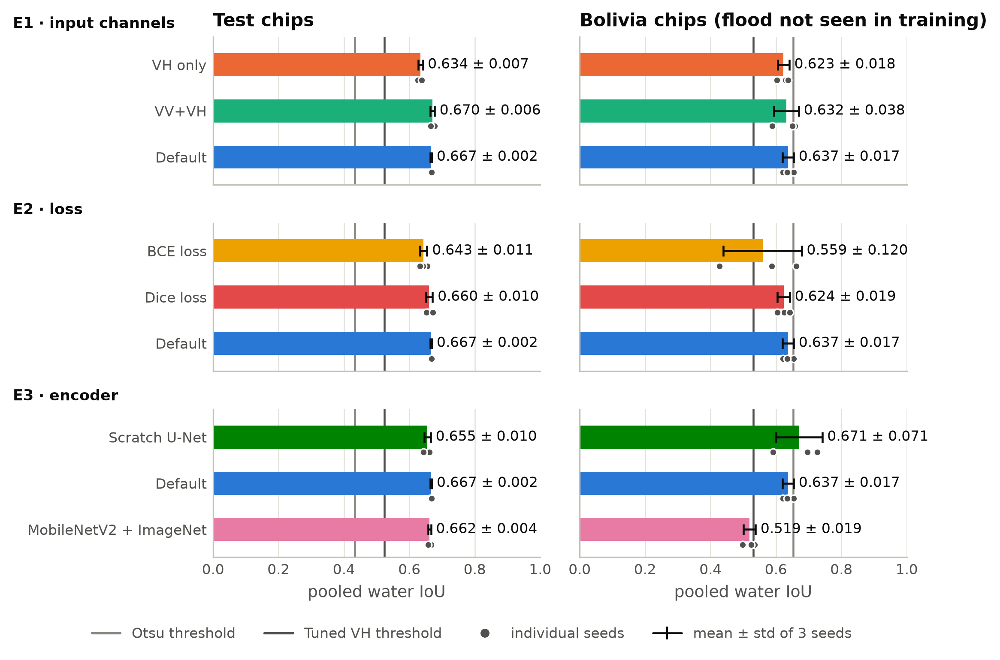
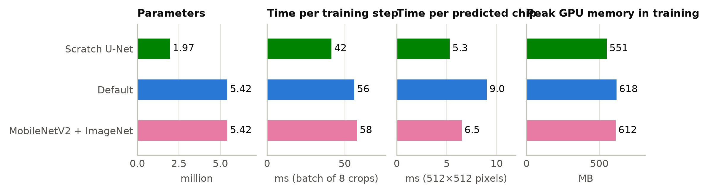
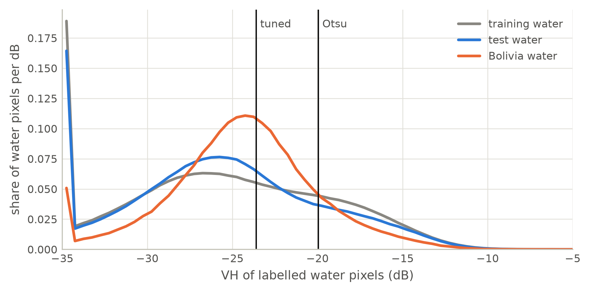
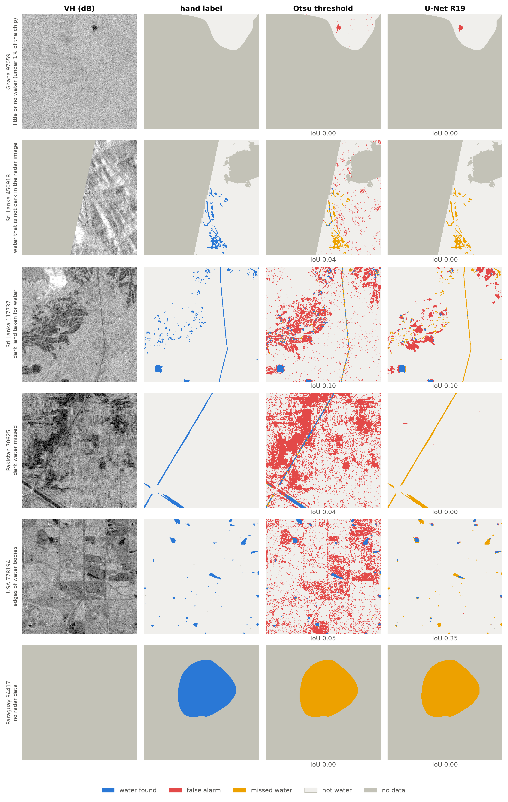
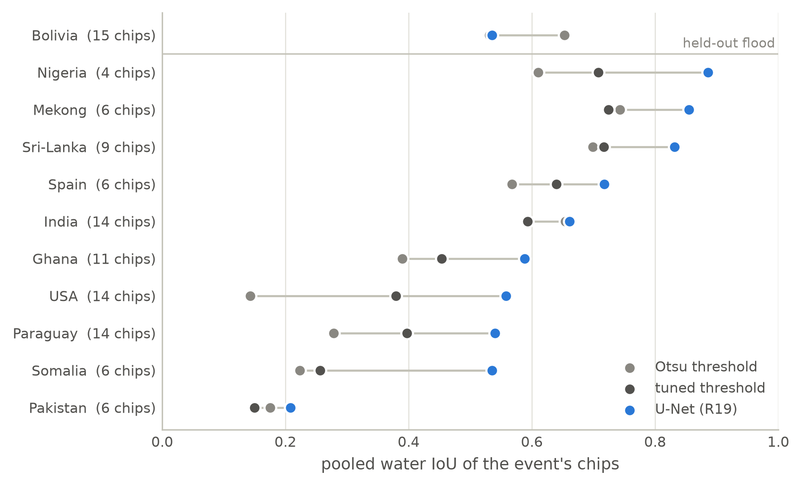
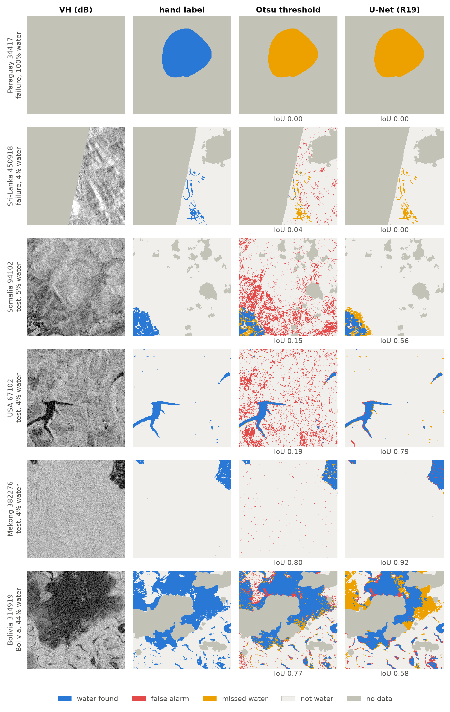

A controlled study of input channels, loss and encoder on Sen1Floods11, trained on a 4 GB laptop GPU
Abstract. Radar satellites see floods through cloud, and deep networks have become the standard way to turn their images into water maps. This project asks what a small network can do under tight constraints, and which design choices matter. U-Nets with at most 5.42 million parameters were trained on the 252 hand-labelled training chips of Sen1Floods11 on a laptop with a 4 GB GPU. One factor was varied at a time (input channels, loss, encoder), each configuration with three seeds, under a frozen protocol in which the test data were scored once per run. The default model, a MobileNetV2 U-Net fed with VV, VH and their ratio and trained with BCE + Dice, reaches a water IoU of 0.667 ± 0.002 on the test chips, against 0.433 for an Otsu threshold and 0.524 for the best single threshold, and within a point of a published model with a much larger encoder. Adding VV to VH and using a Dice-based loss help; the ratio channel, the encoder size and ImageNet weights do not. On a flood never seen in training the lead disappears: no network beats the Otsu threshold reliably (0.637 ± 0.017 against 0.653), models with ImageNet weights are clearly worse (0.519 ± 0.019), and the model that validation selects is the one that transfers worst. About a third of the best model’s errors are water that is not visible in the radar image.
Floods are the most frequent kind of disaster. Of the 7,348 major disaster events recorded worldwide between 2000 and 2019, 3,254 were floods [1], and satellite records show that the share of the world’s population living in places that flood has grown [2]. When a flood is under way, the first thing responders need is a map of where the water is. Satellites can provide one for a whole region within hours, if the water can be seen.
Seeing it is the difficulty. Floods arrive with heavy cloud, and an optical satellite cannot see through cloud. Synthetic aperture radar (SAR) can. A radar satellite sends its own microwave pulses and records what is scattered back, so it works at night and through cloud. The Sentinel-1 mission images most land every 6 to 12 days at 10 m resolution and its data are free [3]. Calm water is smooth: it reflects the side-looking radar pulse away from the satellite, so open water appears dark in a radar image. This is the physical basis of every radar flood map.
“Dark means water” is, however, only a rule of thumb. Tarmac, sand, radar shadow and some crops are dark too, while water roughened by wind or broken by vegetation can be as bright as land. Operational systems started from thresholds on the backscatter [4, 5]; over the last years convolutional networks, above all U-Nets [6], have taken over because they can use the spatial context around a pixel. Sen1Floods11 [7] made this research comparable by publishing Sentinel-1 chips of eleven flood events with water masks, 446 of them labelled by hand.
Much of the published work on this dataset uses large models: ResNet-50 encoders [8], or foundation models with hundreds of millions of parameters [9, 10]. This project asks the opposite question. It studies what a small network can do when it is trained from 252 hand-labelled chips on a laptop with a 4 GB GPU, and which design choices are worth their cost.
Research question. How well can a lightweight U-Net segment flood water in single-date Sentinel-1 imagery under these constraints, and which design choices matter? Four sub-questions structure the work:
Contributions.
Thresholding. The classical way to map water in a radar image is to threshold the backscatter, with the threshold chosen automatically, for instance by Otsu’s method, which picks the cut that best separates a histogram into two groups [4]. Rule-based chains of this kind are still used operationally, and they remain a serious reference: Bereczky et al. benchmarked convolutional networks against such a chain for Sentinel-1 water and flood mapping [5].
The dataset and its baseline. Sen1Floods11 [7] contains 4,831 Sentinel-1 chips of 512×512 pixels from eleven flood events. For 446 of them a water mask was drawn by hand; the others carry automatically generated (“weak”) labels. Its authors trained a fully convolutional network with a ResNet-50 backbone on each label set, compared it with an Otsu threshold on the VH band, and reported the mean IoU over chips. Two of their findings matter here. First, the network trained on the hand labels was never their best model: on the test chips it stayed below the threshold (0.313 against 0.359), and only the network trained on ten times as many weak labels from Sentinel-2 was clearly better (0.408). Second, on the held-out Bolivia flood the threshold (0.386) was level with their best network (0.387). This project uses only the hand-labelled chips, so it works in exactly the small-data regime in which the authors’ own network did not beat a threshold.
Deep networks on Sen1Floods11. U-Net [6], an encoder–decoder with skip connections, is the standard segmentation architecture and most later work builds on it. Konapala et al. compared combinations of Sentinel-1 and Sentinel-2 inputs for U-Nets [11]; their radar-only U-Net is listed with a test IoU of 0.45 in the comparison table of Yadav et al. [8]. Katiyar et al. trained SegNet and U-Net models for near-real-time mapping [12]. Bai et al. fused Sentinel-1 and Sentinel-2 in a boundary-aware network [13]. Closest to this project, Yadav et al. proposed an “Attentive U-Net” with a ResNet-50 encoder initialised from ImageNet that takes exactly the three inputs used as the default here (VV, VH and their ratio) and adds spatial and channel attention; it reaches a test IoU of 0.672, and a second network that also receives elevation and a permanent-water mask reaches 0.695 [8]. The same authors later used a pre-flood image as a second input [14].
More data instead of bigger labels. Patel et al. showed that self-supervised pre-training on unlabelled radar imagery improves a DeepLabv3+ on this dataset (test IoU 0.669 against 0.635 from random initial weights), and that semi-supervised training with unlabelled images helps when whole flood events are held out but not on the standard split [15]. Foundation models push this further: Prithvi, pre-trained on a large archive of optical imagery [9], reaches a water IoU of 0.80 on the Sen1Floods11 test chips after fine-tuning [16], and Schmalstieg et al. distilled a 300-million-parameter successor into a 0.7-million-parameter student for edge devices [10]. The fine-tuned Prithvi model reads the optical Sentinel-2 bands of the same chips, not the radar bands, so such results show what is possible when the sky is clear rather than what radar alone can do.
Small models and classical learners. MobileNetV2 [17] is a compact network built from depthwise-separable convolutions and inverted residual blocks, designed for phones; with ImageNet weights [18] it is a common light encoder. At the other end, Iselborn et al. trained classical learners such as gradient-boosted trees on per-pixel features; with radar features alone their models reach a pooled IoU of about 0.5 on the test chips [19], which is the level of a well-chosen threshold (Section 5). Their paper is also careful about a point that makes published numbers hard to compare: some papers pool all pixels of the test set before computing IoU (“total IoU”), others average the IoU of each chip (“mean IoU”), and the two can differ by almost a factor of two on this dataset.
How reliable are small differences? Phunjanna et al. re-evaluated surface-water models on Sen1Floods11 and found that close rankings change with the random seed and with how regions are weighted [20]. That is the reason every configuration in this project is trained with three seeds, and why a difference is only called real when it exceeds the seed-to-seed spread.
Where this project sits. The studies above mostly add something: attention, extra inputs, more data, larger encoders. Few isolate the effect of the three most basic choices (input channels, loss, encoder) for a small model under a fixed protocol with repeated seeds, and few report what the choices cost on consumer hardware. That is the gap this project fills.
All experiments use the 446 hand-labelled chips of Sen1Floods11, version 1.1 [7]. A chip is a 512×512-pixel tile of a Sentinel-1 scene at 10 m per pixel, about 5 km on a side, stored as a two-band image: the backscatter in decibels (dB) for the VV and the VH polarisation. Each chip comes with a mask of the same size in which every pixel is 1 (water), 0 (not water) or −1 (no data). The masks mark all surface water, permanent and flood water alike. For every event the dataset also holds a Sentinel-2 optical image taken within two days of the radar image, and the masks were drawn with the help of both [7, 8]. This matters later: water that is visible optically is not always dark in the radar image.
The chips come from eleven flood events between 2016 and 2019 (Table 1). The dataset’s official split is used unchanged: 252 training, 89 validation and 90 test chips drawn from ten of the events, and the 15 chips of the eleventh, Bolivia, held out completely. The test chips measure performance on new places within familiar floods; the Bolivia chips measure performance on a flood the model has never seen (RQ4). Before any modelling it was checked that all 446 image and label files exist, that the four split lists cover every chip exactly once, and that no Bolivia chip appears in the other three.
| Event | Radar image | Orbit | Hand-labelled chips | Train | Validation | Test | Held out |
|---|---|---|---|---|---|---|---|
| Ghana | 2018-09-18 | ascending | 53 | 31 | 11 | 11 | – |
| India | 2016-08-12 | descending | 68 | 40 | 14 | 14 | – |
| Mekong | 2018-08-05 | ascending | 30 | 18 | 6 | 6 | – |
| Nigeria | 2018-09-21 | ascending | 18 | 10 | 4 | 4 | – |
| Pakistan | 2017-06-28 | descending | 28 | 16 | 6 | 6 | – |
| Paraguay | 2018-10-31 | descending | 67 | 39 | 14 | 14 | – |
| Somalia | 2018-05-07 | ascending | 26 | 15 | 5 | 6 | – |
| Spain | 2019-09-17 | descending | 30 | 18 | 6 | 6 | – |
| Sri-Lanka | 2017-05-30 | descending | 42 | 24 | 9 | 9 | – |
| USA | 2019-05-22 | ascending | 69 | 41 | 14 | 14 | – |
| Bolivia | 2018-02-15 | descending | 15 | – | – | – | 15 |
| Total | 446 | 252 | 89 | 90 | 15 |
All statistics that influenced a design decision were computed on the training chips only. Figure 1 shows six of them. Three properties of the data shape the rest of the project.

Water is rare. Water covers 9.5% of the labelled training pixels. 32 of the 252 training chips contain no water at all and 159 contain less than 5%. A model that never predicts water would be about 90% accurate, so accuracy is not reported; and a loss that treats all pixels alike is dominated by the easy “not water” pixels, which is why the loss is one of the factors studied (RQ2).
One number does not separate water from land. Figure 2 shows the distribution of both bands for the two classes. Water is darker, but the distributions overlap: the shared area of the two normalised histograms is 0.34 in VH and 0.44 in VV. In VV the water distribution has a second hump that lies largely under the land distribution; the likely cause is water roughened by wind or mixed with vegetation, to which VV is sensitive. A threshold on VH is therefore a fair but limited baseline, and there is room for a model that looks at both bands and at the neighbourhood of a pixel (RQ1).

Part of the data is missing. 13.3% of the training pixels have no label, and 2.0% of the radar pixels have no value (NaN), nearly always where the label is missing too. Unlabelled pixels are excluded from the loss and from every metric. A small number of pixels have a label but no radar value; the largest such case is one test chip whose radar image is entirely empty although a fifth of it is labelled as water. No method can classify such pixels from the image. They are kept in the reported scores, following the usual convention that every labelled pixel counts, and Section 5 also gives the scores without them.
Table 2 summarises the four splits. The water share differs between them, and between events it differs far more, so a score pooled over all pixels and a score averaged over chips will not agree; both are reported.
| Split | Chips | Events | Labelled pixels (millions) | Water share of labelled pixels | Pixels without label | Chips without water | Labelled pixels without radar value |
|---|---|---|---|---|---|---|---|
| Train | 252 | 10 | 57.3 | 9.5% | 13.3% | 32 | 24,150 |
| Validation | 89 | 10 | 20.3 | 11.0% | 13.0% | 9 | 20,571 |
| Test | 90 | 10 | 20.5 | 12.5% | 13.0% | 6 | 73,408 |
| Bolivia (held out) | 15 | 1 | 2.9 | 15.9% | 27.1% | 0 | 43,381 |
Every chip goes through the same function, in training, in evaluation and in the inference demo:
Depending on the configuration the model receives VH alone, VV and VH, or all three channels.
The simplest flood mapper is one rule: a pixel is water if its VH backscatter is below a threshold. Two thresholds were used.
Otsu (run R00, the planned baseline). Otsu’s method [4] was applied once to the histogram of all VH values of the training chips, without labels, and gave −19.95 dB. A single global threshold was preferred to one threshold per chip because Otsu always splits a histogram in two: on the 32 training chips that contain no water, a per-chip threshold marks a median of 43% of the chip as water.
Tuned threshold (run R00b, an added reference). A check on the training and validation chips showed that Otsu’s cut is not the best one. The threshold with the highest IoU on the training labels is −23.60 dB. It was added as a second, stronger reference so that the networks are not compared only with a baseline that is easy to beat. It was fitted on training labels alone.
A U-Net [6] has an encoder that reduces the image step by step to a small, information-rich representation, a decoder that brings it back to full size, and skip connections that hand the encoder’s fine detail to the decoder at each scale. All models here end in one sigmoid output per pixel, the probability of water, and accept any image size divisible by 32, so the same model is trained on 256×256 crops and applied to full 512×512 chips.
Let be the predicted water probability of pixel , its label, and the set of labelled pixels in a batch. Unlabelled pixels are left out of every sum.
Binary cross-entropy judges every pixel separately, so with rare water it is dominated by land pixels. The Dice loss [22] measures the overlap between predicted and true water and ignores how many land pixels were easy. The default is their sum, .
One epoch consists of 4 random 256×256 crops of every training chip, each randomly flipped and rotated by a multiple of 90°, with image and mask transformed identically: 1,008 crops, or 126 batches of 8. Models were trained with Adam [23] at a learning rate of 10⁻³ for at most 60 epochs. After every epoch the model was scored on the full validation chips. The validation water IoU drove three mechanisms: the learning rate was halved after 5 epochs without improvement (down to 10⁻⁵), training stopped after 15 epochs without improvement, and the weights of the best epoch were kept. Training used mixed precision (16-bit arithmetic inside the network, 32-bit for the output and the loss).
These defaults were fixed after a five-epoch smoke test and a first full run that was inspected on validation data only (Section 4.7), then tagged in the code repository before any other model was trained.
With TP, FP and FN the numbers of true-positive, false-positive and false-negative water pixels among the labelled pixels, and a decision threshold of 0.5 on the predicted probability:
The primary metric is the pooled water IoU: TP, FP and FN are summed over all chips of a split before dividing once. Precision, recall and F1 are pooled in the same way. As a secondary metric the mean per-chip IoU is the plain average of the chips’ individual IoU values; chips with no water in the label and none predicted have an undefined IoU and are left out of that average. The two metrics answer different questions. The pooled IoU is dominated by chips with much water; the per-chip mean gives a chip with a small pond the same weight as a chip that is half flooded.
The same tested metric code scores the threshold baselines and every network.
Table 3 lists the runs. Each study changes one factor and keeps everything else at the default, which serves as the shared reference of all three studies. Every configuration was trained three times with seeds 0, 1 and 2; the seed fixes the initial weights and the sequence of crops.
| Study | Question | Configurations | Runs |
|---|---|---|---|
| E0 | Is learning better than a threshold? | Otsu on VH; tuned VH threshold (added) | R00, R00b |
| E1 | RQ1, input channels | VH · VV+VH · VV+VH+ratio | R04–R09, R01–R03 |
| E2 | RQ2, loss | BCE · Dice · BCE+Dice | R10–R15, R01–R03 |
| E3 | RQ3, encoder | Scratch U-Net · MobileNetV2 · MobileNetV2 + ImageNet | R16–R21, R01–R03 |
Three rules were followed throughout.
Reading differences. Results are reported as mean ± standard deviation over the three seeds. A difference between two configurations is treated as real only if it is larger than the larger of their two standard deviations. For the main model, a second kind of uncertainty is also given: a 95% bootstrap interval obtained by resampling the test chips, which shows how much the score depends on which chips happen to be in the test set.
The code is written in Python with TensorFlow 2.21.0 and Keras 3.15.1 and ran on a laptop with an NVIDIA GeForce RTX 3050 Laptop GPU (4 GB) under WSL2 with 7.5 GB of RAM. Every run trains in its own process and writes its full configuration, its training history, the per-chip scores and the code version next to the model, so each number in this report can be traced to a file. Two findings from the smoke test shaped the set-up and are worth passing on.
Compilation. Compiling the training step with XLA, TensorFlow’s just-in-time compiler, reduced the time per step from 414 ms to 62 ms on this machine. Without it the planned runs would not have fitted the time available.
Batch-normalisation momentum. The MobileNetV2 that ships with Keras uses a batch-normalisation momentum of 0.999, which means the running statistics used at validation and test time need thousands of updates to catch up with the weights. An epoch here has 126 updates. In the smoke test the training loss fell normally while the validation IoU stayed at exactly 0.00 for all five epochs; with a momentum of 0.99 in every layer it reached 0.60 (Figure 3). Because checkpointing, learning-rate reduction and early stopping all depend on the validation score, the momentum was set to 0.99 for every model. Anyone who trains a Keras application model from scratch with few updates per epoch is likely to meet the same problem.

All 21 training runs finished; none failed or had to be repeated. A run took 7 minutes on average (about 43 epochs of 8.0 seconds), and all runs together 2.5 hours of GPU time. Every run is listed in Table 11 in the appendix.
| Split | Method | Water IoU | Precision | Recall | F1 | Mean per-chip IoU |
|---|---|---|---|---|---|---|
| Test | Otsu threshold (R00) | 0.433 | 0.483 | 0.809 | 0.605 | 0.260 |
| Tuned threshold (R00b) | 0.524 | 0.747 | 0.637 | 0.688 | 0.279 | |
| Default U-Net (R01–R03) | 0.667 ± 0.002 | 0.836 ± 0.020 | 0.767 ± 0.018 | 0.800 ± 0.002 | 0.398 ± 0.012 | |
| Bolivia | Otsu threshold (R00) | 0.653 | 0.731 | 0.859 | 0.790 | 0.442 |
| Tuned threshold (R00b) | 0.531 | 0.870 | 0.577 | 0.694 | 0.322 | |
| Default U-Net (R01–R03) | 0.637 ± 0.017 | 0.878 ± 0.020 | 0.699 ± 0.023 | 0.778 ± 0.013 | 0.382 ± 0.004 |
On the test chips the network is far ahead (Table 4). The default U-Net reaches a water IoU of 0.667 ± 0.002, against 0.433 for the Otsu threshold and 0.524 for the threshold tuned on the training labels. Compared with Otsu it gives up a little recall (0.767 against 0.809) and removes most of the false alarms (precision 0.836 against 0.483). Compared with the tuned threshold it is better on both counts.
Two kinds of uncertainty. The three seeds agree closely on the test chips (standard deviation 0.002). The uncertainty that comes from the test set itself is much larger: resampling the 90 test chips gives a 95% interval of 0.55 to 0.76 for the IoU of run R01. Absolute IoU values on this dataset should therefore be read as “about 0.67”, not to three decimals. Differences between methods on the same chips are much better determined. The lead of R01 over Otsu is +0.235 (interval +0.16 to +0.31) and over the tuned threshold +0.144 (interval +0.11 to +0.18), and the network wins in every resample.
Per chip, every method looks much worse. The mean per-chip IoU of the default U-Net is 0.398 ± 0.012, against 0.260 and 0.279 for the two thresholds. Most chips hold little water, and on such a chip a few hundred wrong pixels decide the score (Section 5.4). The pooled IoU is carried by the chips with large water bodies.
Missing radar data costs about one point. If the labelled pixels without a radar value are left out, the test IoU of the default U-Net rises from 0.667 to 0.678.

Training itself was unremarkable (Figure 4). There is no sign of overfitting: training and validation loss fall together and end at a similar level, and early stopping ended the default runs after 32 to 39 epochs.
On Bolivia the picture is different: the default U-Net (0.637 ± 0.017) does not beat the Otsu threshold (0.653). Section 5.3 returns to this.
| Study | Configuration | Validation IoU | Test IoU | Test precision | Test recall | Bolivia IoU |
|---|---|---|---|---|---|---|
| Reference | Default (VV+VH+ratio, BCE+Dice, MobileNetV2) | 0.639 ± 0.009 | 0.667 ± 0.002 | 0.836 ± 0.020 | 0.767 ± 0.018 | 0.637 ± 0.017 |
| E1 · input | VH only | 0.612 ± 0.008 | 0.634 ± 0.007 | 0.829 ± 0.015 | 0.730 ± 0.007 | 0.623 ± 0.018 |
| VV+VH | 0.650 ± 0.009 | 0.670 ± 0.006 | 0.854 ± 0.013 | 0.757 ± 0.018 | 0.632 ± 0.038 | |
| E2 · loss | BCE loss | 0.616 ± 0.009 | 0.643 ± 0.011 | 0.853 ± 0.037 | 0.725 ± 0.016 | 0.559 ± 0.120 |
| Dice loss | 0.644 ± 0.007 | 0.660 ± 0.010 | 0.828 ± 0.011 | 0.765 ± 0.007 | 0.624 ± 0.019 | |
| E3 · encoder | Scratch U-Net | 0.641 ± 0.009 | 0.655 ± 0.010 | 0.794 ± 0.001 | 0.790 ± 0.016 | 0.671 ± 0.071 |
| MobileNetV2 + ImageNet | 0.664 ± 0.007 | 0.662 ± 0.004 | 0.846 ± 0.002 | 0.752 ± 0.007 | 0.519 ± 0.019 |

Table 5 and Figure 5 give the scores of all seven configurations and Table 6 applies the rule fixed in advance: a difference counts only if it is larger than the spread between seeds.
| Study | Comparison | Test: gap | Test: larger std | Test: real? | Bolivia: gap | Bolivia: larger std | Bolivia: real? |
|---|---|---|---|---|---|---|---|
| E1 | VH only − VV+VH | −0.036 | 0.007 | yes | −0.009 | 0.038 | no |
| E1 | VH only − Default | −0.032 | 0.007 | yes | −0.014 | 0.018 | no |
| E1 | VV+VH − Default | +0.004 | 0.006 | no | −0.005 | 0.038 | no |
| E2 | BCE loss − Dice loss | −0.017 | 0.011 | yes | −0.064 | 0.120 | no |
| E2 | BCE loss − Default | −0.023 | 0.011 | yes | −0.078 | 0.120 | no |
| E2 | Dice loss − Default | −0.006 | 0.010 | no | −0.013 | 0.019 | no |
| E3 | Scratch U-Net − Default | −0.011 | 0.010 | yes | +0.034 | 0.071 | no |
| E3 | Scratch U-Net − MobileNetV2 + ImageNet | −0.007 | 0.010 | no | +0.152 | 0.071 | yes |
| E3 | Default − MobileNetV2 + ImageNet | +0.005 | 0.004 | yes | +0.118 | 0.019 | yes |
Adding VV to VH helps; the ratio channel does not. With VH alone the test IoU is 0.634 ± 0.007; with VV and VH it is 0.670 ± 0.006, a gain of 0.036, about 5.2 times the spread between seeds. Precision and recall both improve (0.829 to 0.854 and 0.730 to 0.757). Adding the ratio as a third channel changes nothing measurable (0.667 ± 0.002; gap 0.004, smaller than the spread). This is plausible: the ratio is VV − VH, a fixed linear combination of the other two channels, which the first convolution can form by itself. On Bolivia none of the three inputs is distinguishable from the others.
BCE alone is the weakest loss; Dice and BCE+Dice cannot be told apart. BCE reaches 0.643 ± 0.011 on the test chips, Dice 0.660 ± 0.010 and their sum 0.667 ± 0.002. The gaps between BCE and the other two are larger than the spread between seeds, although with three seeds a t-test stays inconclusive (p = 0.06 against the default). The mechanism is the expected one. BCE has the highest precision (0.853) and the lowest recall (0.725): judged pixel by pixel, the cheapest way to be right is to under-predict the rare class. The Dice-based losses find more water (recall 0.765 and 0.767). BCE is also the least stable on Bolivia, where its three seeds give 0.588, 0.428 and 0.662. Adding BCE to Dice does not raise the score, but the three seeds of the combined loss agree more closely on the test chips than those of Dice alone (standard deviation 0.002 against 0.010).
On the test chips the three encoders are within about one IoU point of each other. The scratch U-Net reaches 0.655 ± 0.010, MobileNetV2 0.667 ± 0.002 and MobileNetV2 with ImageNet weights 0.662 ± 0.004. The gap between the scratch U-Net and the default (0.011) is only just larger than the spread between seeds.
ImageNet weights help on validation, not on test, and they hurt on Bolivia. Starting from ImageNet weights raises the validation IoU from 0.639 ± 0.009 to 0.664 ± 0.007. The test IoU does not follow: it is 0.005 lower than that of the default. That gap passes the rule of Table 6 only because the seeds of both configurations agree unusually closely (the larger standard deviation is 0.004; p = 0.21), and it is far smaller than anything the 90 test chips can resolve, so it is read as a tie. On Bolivia the pretrained models fall to 0.519 ± 0.019, against 0.637 ± 0.017 for the same network trained from random weights: a gap of 0.118, about 6.3 times the spread between seeds (p = 0.001). The pretrained encoder fits the ten training floods better and carries over to the eleventh worse.
The small scratch U-Net is the only model that keeps its level on Bolivia, but not reliably. Its Bolivia IoU averages 0.671, slightly above its test IoU, yet the three seeds give 0.726, 0.696 and 0.592. The third stopped after 20 epochs on an early validation peak (best epoch 5) and is the weakest of the three everywhere.
| Encoder | Parameters (millions) | Training step (ms) | Prediction per chip (ms) | Peak GPU memory, training (MB) | Epochs until stop | Minutes per run | Test IoU |
|---|---|---|---|---|---|---|---|
| Scratch U-Net | 1.97 | 42 | 5.3 | 551 | 37 | 4.5 | 0.655 ± 0.010 |
| MobileNetV2 (default) | 5.42 | 56 | 9.0 | 618 | 35 | 6.2 | 0.667 ± 0.002 |
| MobileNetV2 + ImageNet | 5.42 | 58 | 6.5 | 612 | 51 | 9.0 | 0.662 ± 0.004 |

What the encoders cost (Table 7, Figure 6). The scratch U-Net is the cheaper model on every count. It has 1.97 million parameters against 5.42 million, a faster training step (42 ms against 56 ms), shorter runs (4.5 against 6.2 minutes) and a faster prediction (about 5.3 ms per chip). The two MobileNetV2 models are the same network and should cost the same; their training steps agree, while their measured prediction times (9.0 and 6.5 ms) differ only because that measurement is noisy, so prediction times are good to about a third. ImageNet weights cost nothing at run time, but the pretrained runs needed more epochs before early stopping ended them (51 on average against 35). Memory is not a constraint for any of the models: about 551 to 618 MB of GPU memory in training, under 400 MB at prediction, and 3.8 to 4.4 GB of host memory for a training process.
The lead over a simple threshold disappears on the held-out flood. On Bolivia the Otsu threshold reaches 0.653, far above its test score: the Bolivia chips hold proportionally more open water, and the threshold raises far fewer false alarms there (precision 0.731 against 0.483). The default U-Net reaches 0.637 ± 0.017, −0.030 relative to its test score. A paired bootstrap over the 15 Bolivia chips shows that the two cannot be separated: for the three default runs the difference to Otsu is +0.002, −0.032 and −0.018, each interval includes zero, and the network wins in only 21% to 43% of the resamples. The mean per-chip IoU even favours Otsu (0.442 against 0.382 ± 0.004).
What the networks lose on Bolivia is recall. Precision stays high (0.878 for the default), but recall drops from 0.767 on the test chips to 0.699. The tuned threshold shows the same pattern more strongly (recall 0.577) and scores 0.531, below Otsu. Bolivia’s water is simply less dark: its median VH is −24.3 dB against −25.5 dB in the training chips, and only 58% of it lies below the tuned threshold, although 87% lies below the more generous Otsu threshold (Figure 7). A rule or a model that has learned to be careful about moderately dark pixels, because in the training floods they were often land, will plausibly miss real water here.

How well a model transfers depends on the configuration, and validation does not show it. The change from test to Bolivia ranges from +0.016 (scratch U-Net) to −0.143 (ImageNet weights), with the default at −0.030 and BCE at −0.084. The configuration with the best validation IoU, ImageNet weights, is the worst on Bolivia. Validation chips come from the same ten floods as the training chips, so they cannot reveal this.
The error analysis uses the single model with the highest validation IoU, as the protocol demands: R19 (MobileNetV2 + ImageNet, seed 0; test IoU 0.661, Bolivia 0.535). Every wrong pixel was assigned to a category by fixed rules (Table 8), and every chip with an IoU below 0.5 to a group (Table 9). “Dark” means VH below the Otsu threshold.
| Kind of error | Test: U-Net R19 | Test: Otsu | Bolivia: U-Net R19 | Bolivia: Otsu |
|---|---|---|---|---|
| missed water: no radar data | 5% | 2% | 1% | 1% |
| missed water: not dark in the radar image | 35% | 16% | 20% | 29% |
| missed water: thin or small water body | 5% | 0% | 3% | 0% |
| missed water: shoreline | 4% | 0% | 5% | 0% |
| missed water: dark, inside a larger water body | 15% | 0% | 44% | 0% |
| false alarm: shoreline | 14% | 6% | 11% | 16% |
| false alarm: dark land | 18% | 76% | 12% | 53% |
| false alarm: other | 3% | 0% | 4% | 0% |
Most errors on the test chips are missed water, and the largest part of it cannot be seen in the radar image. 65% of the model’s wrong test pixels are missed water. The largest single category, 35% of all errors, is water that is not dark: in the radar image it looks like land. This is the price of labels that were drawn with the help of optical images. No radar-only model can recover such water, and it sets a ceiling on the achievable IoU. A further 5% is water in places with no radar data at all. Genuine misses of dark water account for 15%, thin rivers and small ponds for 5%, and shorelines (missed and false together) for about a fifth.
False alarms are the smaller problem, and they are what the network fixes. For the Otsu threshold, 76% of all wrong test pixels are dark land taken for water. For the U-Net this category shrinks to 18%, of a total that is itself almost three times smaller. The network has learned from context that a dark field is not a lake.
| Failure group | Test chips | Bolivia chips | Mean IoU, U-Net | Mean IoU, Otsu, same chips | Example chip | Its IoU |
|---|---|---|---|---|---|---|
| little or no water (under 1% of the chip) | 23 | 3 | 0.100 | 0.022 | Ghana 97059 | 0.000 |
| water that is not dark in the radar image | 14 | 2 | 0.226 | 0.196 | Sri-Lanka 450918 | 0.001 |
| dark land taken for water | 7 | 1 | 0.318 | 0.207 | Sri-Lanka 117737 | 0.097 |
| dark water missed | 4 | 2 | 0.157 | 0.351 | Pakistan 70625 | 0.000 |
| edges of water bodies | 5 | 0 | 0.444 | 0.212 | USA 778194 | 0.346 |
| no radar data | 1 | 1 | 0.007 | 0.015 | Paraguay 34417 | 0.000 |
Chip by chip (Table 9, Figure 8). 63 chips have an IoU below 0.5. The largest group by far, 26 chips, holds under 1% water: there, a few hundred missed or invented pixels are the whole score. Next come chips whose water is not dark in the radar image, and chips where dark land is taken for water. The model beats Otsu on 64 of the 86 test chips on which both have a defined IoU, but on only 4 of the 15 Bolivia chips.

On Bolivia the dominant error changes. There, 44% of this model’s wrong pixels are dark water inside larger water bodies that it simply did not mark, against 15% on the test chips. This is not a limit of the sensor: the Otsu threshold finds that water. It is a failure to transfer.
The encoders differ on Bolivia in one kind of error. The same breakdown was made for the run with the best validation IoU of each encoder (R16, R02 and R19). The number of wrong Bolivia pixels rises from 145 thousand for the scratch U-Net to 187 thousand for MobileNetV2 and 241 thousand with ImageNet weights; the Otsu threshold has 208 thousand. Nearly all of the difference between the networks is dark water inside larger water bodies, of which they miss 20, 75 and 107 thousand pixels. The water that the two MobileNetV2 models miss is not hard to see: 67% and 73% of it is darker than the Otsu threshold (median VH −21.6 and −22.4 dB). What the scratch U-Net misses is mostly water that is not dark (median −19.5 dB). The scratch U-Net pays for its recall (0.84, against 0.67 and 0.61) with more false alarms than the default (74 against 38 thousand pixels), still about half as many as Otsu (144 thousand). These are single runs, one per encoder, so the comparison shows the mechanism, not its size.

By event (Figure 9). Within the ten training floods the network is better than both thresholds everywhere, from 0.21 in Pakistan to 0.89 in Nigeria (in India only marginally). The gain is largest where a threshold produces mostly false alarms (USA: 0.14 to 0.56).

Figure 10 shows the model’s output next to Otsu on six chips chosen by rule, from poor to good. The pattern of the error analysis is visible chip by chip: where the threshold floods a chip with false alarms the network stays clean, and what the network gets wrong is mostly water it leaves out.
| Method | Input | IoU | Test | Bolivia |
|---|---|---|---|---|
| FCNN (ResNet-50), trained on the hand labels [7] | Sentinel-1 | per chip | 0.313 | 0.352 |
| FCNN (ResNet-50), trained on Sentinel-2 weak labels [7] | Sentinel-1 | per chip | 0.408 | 0.316 |
| Otsu threshold on VH [7] | Sentinel-1 | per chip | 0.359 | 0.386 |
| FCNN of the dataset paper [7], as listed in [8] | Sentinel-1 | not stated | 0.493 | – |
| U-Net [11], as listed in [8] | Sentinel-1 | not stated | 0.450 | – |
| Attentive U-Net (ResNet-50 encoder, ImageNet weights) [8] | Sentinel-1: VV, VH, ratio | not stated | 0.672 | 0.66 |
| Fusion network (ResNet-50 encoders) [8] | Sentinel-1, elevation, permanent water | not stated | 0.695 | 0.69 |
| DeepLabv3+, random initial weights [15] | Sentinel-1 | pooled | 0.635 | – |
| DeepLabv3+, self-supervised pre-training [15] | Sentinel-1 | pooled | 0.669 | – |
| Linear model on radar features [19] | Sentinel-1 | pooled | 0.497 | 0.655 |
| Gradient-boosted trees on radar features [19] | Sentinel-1 | pooled | 0.471 | 0.498 |
| BASNet [13] | Sentinel-1 + Sentinel-2 | pooled | 0.645 | 0.789 |
| Prithvi-100M, fine-tuned (100 M parameters) [16] | Sentinel-2, six optical bands | not stated | 0.805 | 0.780 |
| EfficientViT-B0 distilled from Prithvi-EO-2.0 (0.7 M parameters) [10] | Sentinel-2 (optical) | not stated | 0.787 | – |
| This work: Otsu threshold on VH | Sentinel-1: VH | pooled | 0.433 | 0.653 |
| This work: Tuned VH threshold | Sentinel-1: VH | pooled | 0.524 | 0.531 |
| This work: Default U-Net (MobileNetV2 encoder, 5.4 M parameters) | Sentinel-1: VV, VH, ratio | pooled | 0.667 ± 0.002 | 0.637 ± 0.017 |
| This work: Otsu threshold on VH | Sentinel-1: VH | per chip | 0.260 | 0.442 |
| This work: Tuned VH threshold | Sentinel-1: VH | per chip | 0.279 | 0.322 |
| This work: Default U-Net (MobileNetV2 encoder, 5.4 M parameters) | Sentinel-1: VV, VH, ratio | per chip | 0.398 ± 0.012 | 0.382 ± 0.004 |
Table 10 places the default model next to published numbers for the same test chips. Each number was read in the paper it comes from, except two that are available only as listed in a later paper. Four things can be said with some confidence.
The comparison is indicative only. The papers differ in training data (some use weak labels or unlabelled imagery), inputs, preprocessing and model selection; several report a single run where this work reports the mean of three; and not all state whether their IoU is pooled over pixels or averaged over chips, which on this dataset changes the number by up to a factor of two. Two values are available only as listed by Yadav et al.: the one for the dataset’s network, which does not appear in the dataset paper itself, and the one for the U-Net of Konapala et al., which was obtained on other splits [19]. report/published_results.csv records where each number was read.
RQ1: use both polarisations, skip the ratio. VV adds information that VH does not have, worth about 0.036 IoU on the test chips, and it improves precision and recall together. A hand-made ratio channel adds nothing, because the network can compute it. Its only use here is practical: it fills the third input channel that ImageNet weights require.
RQ2: train with a Dice-based loss. With water at about a tenth of the pixels, BCE alone under-predicts water, as expected, and it was the least stable loss on the unseen flood. Dice alone and BCE+Dice score the same; the combination gave the most consistent seeds, which is a reason to keep it as the default.
RQ3: on familiar floods the encoder hardly matters; ImageNet weights are not worth it for radar. A scratch U-Net with 1.97 million parameters is within about a point of the MobileNetV2 U-Net with 5.42 million. Pretraining on photographs raised the validation score, did nothing for the test score and made the model clearly worse on the unseen flood. The experiments do not show why. A plausible reading is that the pretrained encoder reaches a closer fit to the training floods (the validation chips come from the same floods) and that this closer fit is exactly what does not transfer. Testing that would need runs with a lower learning rate or a frozen encoder, which were outside the plan. The pattern is not new: for a DeepLabv3+ on the same data, Patel et al. report that ImageNet weights add about one point on the standard test split and nothing when whole flood events are held out [15]. The scratch U-Net is also the cheaper model to train and to run, so within the range studied here a larger or pretrained encoder buys nothing that can be measured on the test chips.
RQ4: performance does not reliably hold on an unseen flood. This is the most important result, and it is a negative one. On the test chips every network beats both thresholds by a wide margin. On Bolivia no configuration beats the Otsu threshold reliably; the default cannot be separated from it, the ImageNet models are far below it, and the scratch U-Net is above it in two seeds and below it in the third. The networks stay precise on Bolivia but miss water that is moderately dark, which a generous threshold catches. Two consequences follow. First, a simple unsupervised threshold is a serious competitor outside the training distribution and belongs in every such comparison. Second, validation data drawn from the training floods cannot be used to choose a model for new floods: here it selected the configuration that transferred worst.
How much weight the numbers can bear. Two sources of noise were measured. Between seeds, the test IoU moves by a few thousandths to about one point, the Bolivia IoU by two to twelve points. Between possible test sets, a bootstrap over chips moves the absolute IoU by about ten points in either direction, while paired differences between methods are much more stable. Differences of a point or less between configurations on the test chips, such as the default against VV+VH or against Dice, should therefore be treated as ties, and every statement about Bolivia rests on 15 chips from one flood.
What limits radar-only mapping. About a third of the best model’s wrong test pixels are labelled water that is not dark in the radar image, and a further twentieth has no radar data at all. No change of architecture or loss can recover those. Part of what looks like model error on this benchmark is a mismatch between what the labels describe (water visible in optical and radar images together) and what a single radar image can show.
Practical lessons. Three things cost time or would have misled, and none of them is specific to floods. (1) A Keras application model trained from scratch with few updates per epoch needs a smaller batch-normalisation momentum; otherwise the validation score, and everything that depends on it, is meaningless for many epochs. (2) The baseline matters: Otsu is weak on the test chips and strong on Bolivia, a threshold tuned on labels is the reverse, and reporting only one of them would have told half the story in either direction. (3) Compiling the model made the difference between a plan that fits a laptop and one that does not.
A U-Net with a MobileNetV2 encoder and 5.42 million parameters, trained in about 6.2 minutes on a 4 GB laptop GPU from 252 hand-labelled chips, reaches a water IoU of 0.667 ± 0.002 on the Sen1Floods11 test chips. That is 0.233 above an Otsu threshold, 0.143 above the best single threshold, and within a point of a published model with a much larger encoder. Of the design choices studied, two matter on familiar floods: using VV as well as VH, and a Dice-based loss instead of BCE alone. The ratio channel, the size of the encoder and ImageNet weights do not.
On a flood the models have never seen, the picture changes. No network beats the Otsu threshold reliably, the pretrained models are clearly worse than the same network trained from scratch, and the model that validation would select is the one that transfers worst. For flood mapping, where the next event is by definition a new one, this is the result that deserves most attention: how a model is validated matters as much as how it is built.
| Run | Configuration | Seed | Epochs | Best epoch | Val IoU | Test IoU | Test precision | Test recall | Bolivia IoU | s / epoch |
|---|---|---|---|---|---|---|---|---|---|---|
| R00 | Otsu (E0) | – | – | – | 0.388 | 0.433 | 0.483 | 0.809 | 0.653 | – |
| R01 | Default | 0 | 39 | 24 | 0.628 | 0.668 | 0.852 | 0.756 | 0.655 | 8.6 |
| R02 | Default | 1 | 32 | 17 | 0.645 | 0.664 | 0.844 | 0.757 | 0.621 | 8.4 |
| R03 | Default | 2 | 34 | 19 | 0.643 | 0.667 | 0.813 | 0.788 | 0.635 | 8.6 |
| R04 | VH only | 0 | 39 | 24 | 0.605 | 0.639 | 0.846 | 0.723 | 0.630 | 8.3 |
| R05 | VH only | 1 | 44 | 29 | 0.611 | 0.627 | 0.816 | 0.729 | 0.603 | 8.3 |
| R06 | VH only | 2 | 47 | 32 | 0.620 | 0.638 | 0.826 | 0.737 | 0.637 | 8.2 |
| R07 | VV+VH | 0 | 47 | 32 | 0.644 | 0.668 | 0.851 | 0.757 | 0.588 | 8.2 |
| R08 | VV+VH | 1 | 54 | 39 | 0.646 | 0.678 | 0.844 | 0.775 | 0.658 | 8.2 |
| R09 | VV+VH | 2 | 60 | 45 | 0.661 | 0.665 | 0.869 | 0.740 | 0.650 | 8.3 |
| R10 | BCE loss | 0 | 47 | 32 | 0.620 | 0.655 | 0.879 | 0.720 | 0.588 | 8.0 |
| R11 | BCE loss | 1 | 44 | 29 | 0.606 | 0.642 | 0.869 | 0.711 | 0.428 | 8.1 |
| R12 | BCE loss | 2 | 39 | 24 | 0.622 | 0.633 | 0.811 | 0.743 | 0.662 | 8.0 |
| R13 | Dice loss | 0 | 30 | 15 | 0.649 | 0.657 | 0.831 | 0.758 | 0.625 | 8.2 |
| R14 | Dice loss | 1 | 35 | 20 | 0.636 | 0.653 | 0.816 | 0.765 | 0.604 | 8.2 |
| R15 | Dice loss | 2 | 39 | 24 | 0.646 | 0.672 | 0.837 | 0.773 | 0.642 | 8.3 |
| R16 | Scratch U-Net | 0 | 46 | 31 | 0.649 | 0.661 | 0.794 | 0.799 | 0.726 | 6.3 |
| R17 | Scratch U-Net | 1 | 45 | 30 | 0.642 | 0.661 | 0.793 | 0.799 | 0.696 | 6.3 |
| R18 | Scratch U-Net | 2 | 20 | 5 | 0.631 | 0.644 | 0.795 | 0.771 | 0.592 | 6.2 |
| R19 | MobileNetV2 + ImageNet | 0 | 60 | 47 | 0.670 | 0.661 | 0.847 | 0.751 | 0.535 | 8.2 |
| R20 | MobileNetV2 + ImageNet | 1 | 44 | 29 | 0.668 | 0.667 | 0.844 | 0.760 | 0.524 | 8.3 |
| R21 | MobileNetV2 + ImageNet | 2 | 49 | 34 | 0.656 | 0.658 | 0.848 | 0.746 | 0.499 | 8.6 |
| R00b | Tuned VH threshold | – | – | – | 0.492 | 0.524 | 0.747 | 0.637 | 0.531 | – |
The code, the run configurations, the result files and the notebooks are in the project repository; README.md gives the set-up and the commands. In brief:
gs://sen1floods11.configs/R01.json to configs/R21.json hold the seed and the one setting in which each run differs from src/config_default.json. python -m src.train --config configs/R04.json --evaluate trains a run and scores it once on test and Bolivia; the notebooks 04 to 08 do the same for all runs and keep their logs.defaults-frozen in git before any ablation run. All ablation runs were produced by that version of the training and scoring code; each run’s config.json records the commit.results/ by python -m src.report_assets; report/generated/sources.json lists the file and field behind each one. results/all_runs.csv is the table of all runs.requirements.txt.